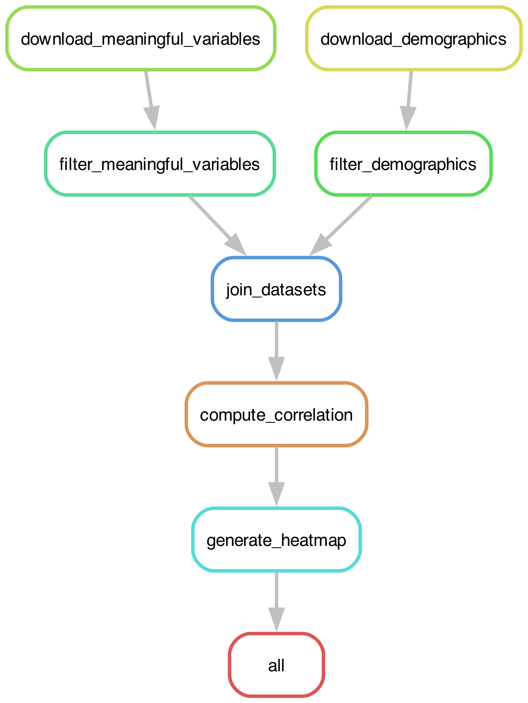
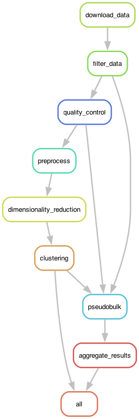

9 Workflow Management
In most areas of science today, the processing and analysis of data comprise many different steps. I will refer to such a set of steps as a computational workflow; while there are certainly many types of non-computational workflows in science (such as protocols in wet labs), I will focus here on computational workflows. If you have been doing science for very long, you have very likely encountered a mega-script that implements such a workflow. This is a script that may be hundreds or even thousands of lines long that runs a single workflow from start to end. Often these scripts are handed down to new trainees over generations, such that users become afraid to make any changes lest the entire house of cards comes crashing down. I think that most of us can agree that this is not an optimal workflow, and in this chapter I will discuss in detail how to move from a mega-script to a workflow that can provide robust and reliable answers to our scientific questions.
9.1 What do we want from a scientific workflow?
TODO: ? add specific examples of what happens when each of these are violated?
First let’s ask: What do we want from a computational scientific workflow? Here are some of the factors that I think are important. First, we care about the correctness of the workflow, which includes the following factors:
Validity: The workflow includes validation procedures to ensure against known problems or edge cases.
Reproducibility: The workflow can be rerun from scratch on the same data and get the same answer, at least within the limits of uncontrollable factors such as floating point imprecision and operating system differences.
Robustness: When there is a problem, the workflow fails quickly with explicit error messages, or degrades gracefully when possible.
Second, we care about the usability of the workflow. Factors related to usability include:
Configurability: The workflow uses smart defaults, but allows the user to easily change the configuration.
Portability: We would like for the workflow to be easily runnable across multiple systems.
Parameterizability: Multiple runs of the workflow can be executed with different parameters, and the separate outputs can be tracked.
Standards compliance: The workflow leverages common standards to easily read in data and generates output using community standards for file formats and organization when available.
Third, we care about the engineering quality of the code, which includes:
Maintainability: The workflow is structured and documented so that others (including our future selves) can easily maintain, update, and extend it in the future.
Modularity: The workflow is composed of a set of independently testable modules, which can be swapped in or out relatively easily.
Idempotency: This term from computer science means that the result of the workflow doesn’t change if it is re-run.
Traceability: All operations are logged, and provenance information is stored for outputs.
Finally, we care about the efficiency of the workflow implementation. This includes:
Incremental execution: The workflow only reruns a module if necessary, such as when an input changes.
Cached computation: The workflow pre-computes and reuses results from expensive operations when possible.
It’s worth noting that these different desiderata will sometimes conflict with one another (such as configurability versus maintainability), and that no workflow will be perfect. For example, a highly configurable workflow will often be more difficult to maintain.
9.2 FAIR-inspired practices for workflows
In the earlier chapter on Data Management I discussed the FAIR (Findable, Accessible, Interoperable, and Reusable) principles for data. Since those principles were proposed in 2016 they have been extended to many other types of research objects, including workflows (Wilkinson et al. 2025). The reader who is not an informatician may quickly glaze over when reading these articles, as they rely on concepts and jargon that will be unfamiliar to most scientists. Realizing that most scientists are unlikely to go to the lengths of a fully FAIR workflow, and preferring not to let the perfect be the enemy of the good, I think that we can take an “80/20” approach, meaning that we can get 80% of the benefits for about 20% of the effort. We can adhere to the spirit of the FAIR Workflows principle by adopting the following principles, building on the “Ten Quick Tips for Building FAIR Workflows” presented by Visser et al. (2023):
Metadata: Provide sufficient metadata in a standard machine-readable format to make the workflow findable once it is shared.
Version control: All workflow code should be kept under version control and hosted on a public repository such as Github.
Documentation: Workflows should be well documented. Documentation should focus primarily on the scientific motivation and technical design of the workflow, along with instructions on how to run it and description of the outputs.
Standard organization schemes: Both the workflow files (code and configuration) and data files should follow established standards for organization.
Standard file formats: The inputs and outputs to the workflow should use established standard file formats rather than inventing new formats.
Configurability: The workflow should be easily configurable, and example configuration files should be included in the repository.
Requirements: The requirements for the workflow should be clearly specified, either in a file (such as
pyproject.tomlorrequirements.txt) or in a container configuration file (such as aDockerfile).Clear workflow structure: The workflow structure should be easily understandable.
There are certainly some contexts where a more formal structure adhering in detail to the FAIR Workflows standard may be required, as in large collaborative projects with specific compliance objectives, but these rough guidelines should get a researcher most of the way there.
9.3 Piping and chaining
One of the simplest ways to build a workflow is to stream data directly from one command to another, such that the intermediate results are ephemeral since no information about the intermediate states is saved. Such a workflow is linear in the sense that there is a single pathway through the workflow. One common way that this is accomplished is through the use of pipes, which are a syntactic construct that feed the results of one process directly into the next process. Some readers may be familiar with pipes from the UNIX shell, where they are represented by the vertical bar “|”. For example, let’s say that we had a log file that contains the following entries:
2024-01-15 10:23:45 ERROR: Database connection failed
2024-01-15 10:24:12 ERROR: Invalid user input
2024-01-15 10:25:33 ERROR: Database connection failed
2024-01-15 10:26:01 INFO: Request processed
2024-01-15 10:27:15 ERROR: Database connection failedand that we wanted to generate a summary of errors. We could use the following pipeline:
$ grep "ERROR" app.log | sed 's/.*ERROR: //' | sort | uniq -c | sort -rn > error_summary.txtwhere:
grep "ERROR" app.logextracts lines containing the word “ERROR”sed ’s/.*ERROR: //’replaces everything up to the actual message with an empty stringsortsorts the rows alphabeticallyuniq -ccounts the number of appearances of each unique error messagesort -rnsorts the rows in reverse numerical order (largest to smallest)>error_summary.txtredirects the output into a file callederror_summary.txt
Pipes are also commonly used in the R community, where they are a fundamental component of the tidyverse ecosystem of packages.
9.3.1 Method chaining
One way that linear workflows are commonly built in Python is using method chaining, where each method returns an object on which the next method is called; this is slightly different from the operation of UNIX pipes, where it is the output of each command that is being passed through the pipe rather than an entire object. This is commonly used to perform data transformations in pandas, as it allows composing multiple transformations into a single command. As an example, we will work with the Eisenberg et al. dataset that we used in a previous chapter, to compute the probability of having ever been arrested separately for males and females in the sample. To do this we need to perform a number of operations:
drop any observations that have missing values for the
SexorArrestedChargedLifeCountvariablesreplace the numeric values in the
Sexvariable with text labelscreate a new variable called
EverArrestedthat binarizes the counts in the ArrestedChargedLifeCount variablegroup the data by the
Sexvariableselect the column that we want to compute the mean of (
EverArrested)compute the mean
We can do this in a single command using method chaining in pandas. It’s useful to format the code in a way that makes the pipeline steps explicit, by putting parentheses around the operation; in Python, any commands within parentheses are implicitly treated as a single line, which can be useful for making complex code more readable:
arrest_stats_by_sex = (df
.dropna(subset=['Sex', 'ArrestedChargedLifeCount'])
.replace({'Sex': {0: 'Male', 1: 'Female'}})
.assign(EverArrested=lambda x: (x['ArrestedChargedLifeCount'] > 0).astype(int))
.groupby('Sex')
['EverArrested']
.mean()
)
print(arrest_stats_by_sex)Sex
Female 0.156489
Male 0.274131
Name: EverArrested, dtype: float64Note that pandas data frames also include an explicit .pipe method that allows using arbitrary functions within a pipeline. While these kinds of streaming workflows can be useful for simple data processing operations, they can become very difficult to debug, so I would generally avoid using complex functions within a method chain.
9.4 A simple workflow example
Most real scientific workflows are complex and can often run for hours, and we will encounter such a complex workflow later in the chapter. However, we will start our discussion of workflows with a relatively simple and fast-running example that will help demonstrate the basic concepts of workflow execution. We will use the same data as above (from Eisenberg et al.) to perform a simple workflow:
Load the demographic and meaningful variables files
Drop any non-numeric variables from each data frame
Join the data frames using their shared index
Compute the correlation matrix across all variables
Generate a clustered heatmap for the correlation matrix
I implemented each of these components as a function within a module. For example, here is the function that drops the non-numerical columns from each data frame:
def filter_numerical_columns(df: pd.DataFrame) -> pd.DataFrame:
"""Filter a dataframe to keep only numerical columns.
Args:
df: Input dataframe.
Returns:
Dataframe with only numerical columns.
"""
return df.select_dtypes(include=["number"])Note that this function really only has one line that does any work; we could just as easily have used that command within the code that calls this function, but placing it in a well-named function makes the intent of the code clear. All of the functions can be viewed at bettercode/simple_workflow.py within the project Github repository.
The simplest possible workflow would be a script that simply imports and calls each of the functions in turn. For such a simple workflow this would be fine, but I will use this example to show how we might take advantage of more sophisticated workflow management tools.
9.5 Running a simple workflow using GNU make
One of the simplest ways to organize a workflow is using the GNU make tool, which executes commands defined in a file named Makefile. make is a very handy general-purpose tool that every user of UNIX systems should become familiar with. The Makefile defines a set of labeled commands, like this:
.PHONY: all clean
all: step1.txt step2.txt
# this one takes no input, and outputs step1.txt
step1.txt:
python step1.py
# this one requires step1.txt as input, and outputs step2.txt
step2.txt: step1.txt
python step2.py -i step1.txt
clean:
-rm step1.txt step2.txtIn this case, the command make step1.txt will run the command python step1.py which outputs a file called step1.txt, unless that file already exists and the existing file is at least as new as its dependencies. This is one of the powerful features of make: since it checks the timestamps of existing files, it can automatically rerun commands if any of their dependencies have changed. The command make step2.txt requires step1.txt, so it will first run that action (which will do nothing if the file already exists and is at least as new as its dependencies). It will then perform python step2.py -i step1.txt which outputs step2.txt. The command make all will execute the all target, which includes both of the output files, and make clean will remove each of those files if they exist. The targets all and clean are referred to as phony targets since they are not meant to refer to a specific file but rather to an action. The .PHONY designation in the Makefile denotes this, such that those commands will run even if a file called “all” or “clean” happens to exist. This should already show you why make is such a handy tool: Any time there is a command that you run regularly in a particular directory, you can put it into a Makefile and then execute it with just a single make call.
Here is how we could build a Makefile to run our simple workflow:
# if OUTPUT_DIR isn't already defined, set it to the default
OUTPUT_DIR ?= ./output
.PHONY: all clean
all: $(OUTPUT_DIR)/figures/correlation_heatmap.png
$(OUTPUT_DIR)/data/demographics.csv $(OUTPUT_DIR)/data/meaningful_variables.csv:
@echo "Downloading data..."
mkdir -p $(OUTPUT_DIR)/data $(OUTPUT_DIR)/results $(OUTPUT_DIR)/figures
uv run python scripts/download_data.py $(OUTPUT_DIR)/data
$(OUTPUT_DIR)/data/demographics_numerical.csv: $(OUTPUT_DIR)/data/demographics.csv
@echo "Filtering demographics data..."
uv run python scripts/filter_data.py $(OUTPUT_DIR)/data
$(OUTPUT_DIR)/data/meaningful_variables_numerical.csv: $(OUTPUT_DIR)/data/meaningful_variables.csv
@echo "Filtering meaningful variables data..."
uv run python scripts/filter_data.py $(OUTPUT_DIR)/data
$(OUTPUT_DIR)/data/joined_data.csv: $(OUTPUT_DIR)/data/demographics_numerical.csv $(OUTPUT_DIR)/data/meaningful_variables_numerical.csv
@echo "Joining data..."
uv run python scripts/join_data.py $(OUTPUT_DIR)/data
$(OUTPUT_DIR)/results/correlation_matrix.csv: $(OUTPUT_DIR)/data/joined_data.csv
@echo "Computing correlation..."
uv run python scripts/compute_correlation.py $(OUTPUT_DIR)/data $(OUTPUT_DIR)/results
$(OUTPUT_DIR)/figures/correlation_heatmap.png: $(OUTPUT_DIR)/results/correlation_matrix.csv
@echo "Generating heatmap..."
uv run python scripts/generate_heatmap.py $(OUTPUT_DIR)/results $(OUTPUT_DIR)/figures
clean:
rm -rf $(OUTPUT_DIR)Most of the targets (except for “clean” and “all”) refer to specific files that are required for the workflow. For example, the first target refers to the two files that need to be downloaded by the download_data.py script. This target does not rely on the outputs of any others, so there is nothing following the colon in the target name. For the others, they require particular inputs, which come after the colon; thus, if those don’t already exist then their targets will be run first. Note that make requires the use of tabs to indent commands, and will fail if spaces are used; thus, Makefile commands often need to be reformatted when copied and pasted since this often converts tabs to spaces. This is a common source of make problems that is easy to miss.
Each step calls a Python script that is basically an interface to the relevant function. Here is the script that performs the variable filtering1:
import sys
from pathlib import Path
import pandas as pd
from bettercode.simple_workflow import filter_numerical_columns
def main():
"""Filter both datasets to numerical columns."""
if len(sys.argv) != 2:
print("Usage: python filter_data.py <data_dir>")
sys.exit(1)
data_dir = Path(sys.argv[1])
# Filter meaningful variables
mv_df = pd.read_csv(data_dir / "meaningful_variables.csv", index_col=0)
mv_num = filter_numerical_columns(mv_df)
mv_num.to_csv(data_dir / "meaningful_variables_numerical.csv")
print(f"Filtered meaningful_variables: {mv_df.shape} -> {mv_num.shape}")
# Filter demographics
demo_df = pd.read_csv(data_dir / "demographics.csv", index_col=0)
demo_num = filter_numerical_columns(demo_df)
demo_num.to_csv(data_dir / "demographics_numerical.csv")
print(f"Filtered demographics: {demo_df.shape} -> {demo_num.shape}")
if __name__ == "__main__":
main()We can run the entire workflow by simply running make all:
$ make all
Downloading data...
mkdir -p ./output/data ./output/results ./output/figures
uv run python scripts/download_data.py ./output/data
Downloaded meaningful_variables.csv (522 rows)
Downloaded demographics.csv (522 rows)
Filtering demographics data...
uv run python scripts/filter_data.py ./output/data
Filtered meaningful_variables: (522, 193) -> (522, 193)
Filtered demographics: (522, 33) -> (522, 28)
Joining data...
uv run python scripts/join_data.py ./output/data
Meaningful variables: (522, 193)
Demographics: (522, 28)
Joined: (522, 221)
Computing correlation...
uv run python scripts/compute_correlation.py ./output/data ./output/results
Loaded joined data: (522, 221)
Saved correlation matrix: (221, 221)
Generating heatmap...
uv run python scripts/generate_heatmap.py ./output/results ./output/figures
Loaded correlation matrix: (221, 221)
Saved heatmap to output/figures/correlation_heatmap.pngThe rules that refer to specific files will only be triggered if the filename in question doesn’t exist, as we can see if we run the make command again:
$ make all
make: Nothing to be done for `all'.However, if we delete the heatmap file and rerun the make command, then the generate_heatmap action will be triggered:
$ make all
Generating heatmap...
uv run python scripts/generate_heatmap.py ./output/results ./output/figures
Loaded correlation matrix: (221, 221)
Saved heatmap to output/figures/correlation_heatmap.pngWe could also take advantage of another feature of make: it only triggers the action if a file with the name of the action doesn’t exist, or if the existing file is not newer than its dependencies. Thus, if the command was make results/output.txt, then the action would only be triggered if the file does not exist or if it was older than the inputs. This is why we had to put the .PHONY command in the makefile above: it’s telling make that those are not meant to be interpreted as file names, but rather as commands, so that they will be run even if files named “all” or “clean” exist.
For many simple workflows make can be a perfectly sufficient solution to workflow management, but we will see below why it’s not sufficient to manage a complex workflow. For those workflows we could either build our own more complex workflow management system, or we could use an existing software tool that is built to manage workflow execution, known as a workflow engine. In general I prefer to use an existing solution unless it doesn’t solve my problem, so I will now turn to discussing packages for workflow management.
9.6 Using a workflow engine
There is a wide variety of workflow engines available for data analysis workflows, most of which are centered around the concept of an execution graph. This is a graph in the sense described by graph theory, which refers to a set of nodes that are connected by lines (known as edges). Workflow execution graphs are a particular kind of graph known as a directed acyclic graph, or DAG for short. Each node in the graph represents a single step in the workflow, and each edge represents the dependency relationships that exist between nodes. DAGs have two important features. First, the edges are directed, which means that they move in one direction that is represented graphically as an arrow. These represent the dependencies within the workflow. For example, in our workflow step 1 (obtaining the data) must occur before step 2 (filtering the data), so the graph would have an edge from step 1 with an arrow pointing at step 2. Second, the graph is acyclic, which means that it doesn’t have any cycles, that is, it never circles back on itself. Cycles would be problematic, since they could result in workflows that executed in an infinite loop as the cycle repeated itself.
Most workflow engines provide tools to visualize a workflow as a DAG. Figure 1.1 shows our example workflow visualized using the Snakemake tool that we will introduce below:

The use of DAGs to represent workflows provides a number of important benefits:
The engine can identify independent pathways through the graph, which can then be executed in parallel
If one node of the graph changes, the engine can identify which downstream nodes need to be rerun
If a node fails, the engine can be configured to continue with executing the nodes that don’t depend on the failed node either directly or indirectly
There are a couple of additional benefits to using a workflow engine, which I will discuss in more detail in the context of a more complex workflow. The first is that they generally deal automatically with the storage of intermediate results (known as caching or checkpointing), which can help speed up execution when nothing has changed and allow continued execution if the process is interrupted. The second is that the workflow engine uses the execution graph to optimize the schedule of computations, only performing those operations that are actually needed. This is similar in spirit to the concept of lazy execution used by packages like Polars, in which the system optimizes computational efficiency by first analyzing the full computational graph.
9.6.1 General-purpose versus domain-specific workflow engines
With the growth of data science within industry and research, there has been an explosion of new workflow management systems that aim to solve particular problems; a list of these can be found at awesome-workflow-engines. It’s also worth noting that there are a number of domain-specific workflow engines that are specialized for particular kinds of data and workflows. Examples include Galaxy which is specialized for bioinformatics and genomics, and Nipype which is specialized for neuroimaging analysis workflows. If your research community uses one of these then it’s worth exploring that engine as your first option, since it will probably be well supported within the community. However, a benefit of using a general-purpose engine is that they will often be better maintained and supported, and AI tools will likely have more examples to work from when generating new workflows.
9.7 Workflow management using Snakemake
I will use the Snakemake workflow system for this example, which I chose for several reasons:
It is a very well-established project that is actively maintained.
It is Python-based, which makes it easy for Python users to grasp.
Because of its long history and wide use, AI coding assistants are quite familiar with it and can easily generate the necessary files for complex workflows.
Snakemake is a sort of “make on steroids”, designed specifically to manage complex computational workflows. It uses a Python-like syntax to define the workflow, from which it infers the computational graph and optimizes the computation. The Snakemake workflow is defined using a Snakefile, the most important aspect of which is a set of rules that define the different workflow steps in terms of their outputs. Here is an initial portion of the Snakefile for our simple workflow:
# Base directory (where `Snakefile` is located)
BASEDIR = workflow.basedir
# Output directories (relative to working directory set via -d)
DATA_DIR = "data"
RESULTS_DIR = "results"
FIGURES_DIR = "figures"
LOGS_DIR = "logs"
# Load configuration
configfile: f"{BASEDIR}/config/config.yaml"
# Global report
report: f"{BASEDIR}/report/workflow.rst"
# Default target
rule all:
input:
f"{FIGURES_DIR}/correlation_heatmap.png",What this does is first specify a set of directories; the BASEDIR variable refers to the directory where the Snakefile is found, while the other directories are specified with the respect to the working directory that is specified using the -d argument. It then specifies the location of the configuration file, which is a YAML file that defines various parameters for the workflow. Here are the contents of the config file for our simple example:
# Data URLs
meaningful_variables_url: "<URL deleted for brevity>"
demographics_url: "<URL deleted for brevity>"
# Correlation settings
correlation_method: "spearman"
# Heatmap settings
heatmap:
figsize: [12, 10]
cmap: "coolwarm"
vmin:-1.0
vmax: 1.0The only rule shown above is the all rule, which takes as its input the correlation figure that is the final output of the workflow. If snakemake is called and that file already exists, then it won’t be rerun (since it’s the only requirement for the rule) unless 1) the --force flag is included, which forces rerunning the entire workflow, or 2) a rerun is triggered by one of the changes to the input files, parameters, or the code itself. If the file doesn’t exist, then Snakemake examines the additional rules to determine which steps need to be run in order to generate that output. In this case, it would start with the rule that generates the correlation figure:
# Step 5: Generate clustered heatmap
rule generate_heatmap:
input:
f"{RESULTS_DIR}/correlation_matrix.csv",
output:
report(
f"{FIGURES_DIR}/correlation_heatmap.png",
caption=f"{BASEDIR}/report/heatmap.rst",
category="Results",
),
params:
figsize=config["heatmap"]["figsize"],
cmap=config["heatmap"]["cmap"],
vmin=config["heatmap"]["vmin"],
vmax=config["heatmap"]["vmax"],
log:
f"{LOGS_DIR}/generate_heatmap.log",
conda:
f"{BASEDIR}/envs/simple.yml"
script:
f"{BASEDIR}/scripts/generate_heatmap.py"This step uses the generate_heatmap.py script to generate the correlation figure, and it requires the correlation_matrix.csv file as input. Note that while there is a Conda directive in this rule, which we will discuss further below, Conda is not actually used unless the --use-conda flag is provided. Snakemake would then work backward to identify which step is required to generate that file, which is the following:
# Step 4: Compute correlation matrix
rule compute_correlation:
input:
f"{DATA_DIR}/joined_data.csv",
output:
f"{RESULTS_DIR}/correlation_matrix.csv",
params:
method=config["correlation_method"],
log:
f"{LOGS_DIR}/compute_correlation.log",
conda:
f"{BASEDIR}/envs/simple.yml"
script:
f"{BASEDIR}/scripts/compute_correlation.py"By working backwards this way from the intended output, Snakemake can reconstruct the computational graph that we saw in Figure 1.1. It then uses this graph to plan the computations that will be performed.
9.7.1 Snakemake scripts
In order for Snakemake to execute each of our modules, we need to wrap those modules in a script that can use the configuration information from the config file. Here is an example of what the generate_heatmap.py script would look like:
from pathlib import Path
import pandas as pd
from bettercode.simple_workflow.visualization import (
generate_clustered_heatmap,
)
def main() -> None:
"""Generate and save clustered heatmap."""
# ruff: noqa: F821
input_path = Path(snakemake.input[0])
output_path = Path(snakemake.output[0])
figsize = tuple(snakemake.params.figsize)
cmap = snakemake.params.cmap
vmin = snakemake.params.vmin
vmax = snakemake.params.vmax
# Load correlation matrix
corr_matrix = pd.read_csv(input_path, index_col=0)
print(f"Loaded correlation matrix: {corr_matrix.shape}")
# Generate heatmap
generate_clustered_heatmap(
corr_matrix,
output_path=output_path,
figsize=figsize,
cmap=cmap,
vmin=vmin,
vmax=vmax,
)
print(f"Saved heatmap to {output_path}")
if __name__ == "__main__":
main()You can see that the code refers to the snakemake module even though we haven’t explicitly imported it; this is possible because the script is executed within the Snakemake environment which makes the snakemake object available within the script’s execution namespace, containing all of the configuration details.
Once the Snakefile and other related files are ready to go, we can first check whether they are properly formatted using snakemake --lint, which is a static analysis tool specifically for snakemake configuration files. Here is the result (note: some output lines are omitted for conciseness):
$ uv run snakemake --lint --cores 1 -d ./output
Congratulations, your workflow is in a good condition!We are now ready to run the snakemake command, which will need to include several configuration directives. Let’s first do a “dry run” which creates the execution graph but doesn’t actually execute anything:
$ uv run snakemake --dry-run --cores 1 -d ./output
Building DAG of jobs...
Job stats:
job count
--------------------------------------
all 1
compute_correlation 1
download_demographics 1
download_meaningful_variables 1
filter_demographics 1
filter_meaningful_variables 1
generate_heatmap 1
join_datasets 1
total 8
... (omitting intermediate output)
Job stats:
job count
--------------------------------------
all 1
compute_correlation 1
download_demographics 1
download_meaningful_variables 1
filter_demographics 1
filter_meaningful_variables 1
generate_heatmap 1
join_datasets 1
total 8
Reasons:
(check individual jobs above for details)
input files updated by another job:
all, compute_correlation, filter_demographics, filter_meaningful_variables, generate_heatmap, join_datasets
output files have to be generated:
compute_correlation, download_demographics, download_meaningful_variables, filter_demographics, filter_meaningful_variables, generate_heatmap, join_datasets
This was a dry-run (flag -n). The order of jobs does not reflect the order of execution.Once we have confirmed that everything is set up properly, we can then use snakemake to run the workflow:
$ uv run snakemake --cores 1 -d ./output
Building DAG of jobs...
Job stats:
job count
--------------------------------------
all 1
compute_correlation 1
download_demographics 1
download_meaningful_variables 1
filter_demographics 1
filter_meaningful_variables 1
generate_heatmap 1
join_datasets 1
total 8
Select jobs to execute...
Execute 1 jobs...
[Wed Dec 24 08:17:57 2025]
localrule download_demographics:
output: output/data/demographics.csv
log: output/logs/download_demographics.log
jobid: 7
reason: Missing output files: output/data/demographics.csv
resources: tmpdir=/var/folders/r2/f85nyfr1785fj4257wkdj7480000gn/T
Downloaded 522 rows from <URL deleted for brevity>
Saved to output/data/demographics.csv
[Wed Dec 24 08:17:58 2025]
Finished jobid: 7 (Rule: download_demographics)
1 of 8 steps (12%) done
... (omitting intermediate output)
8 of 8 steps (100%) done
Complete log(s): .snakemake/log/2025-12-24T081757.266320.snakemake.logIt’s important to know that when Snakemake is run, it stores metadata regarding the workflow in a hidden directory called .snakemake, including the log file mentioned at the end of the output above. This directory can carry over hidden state from previous runs that can become confusing when debugging. It’s sometimes useful to remove this directory as a last resort (when the --force and --cleanup-metadata are not sufficient).
One handy feature of Snakemake is that, just like make, we can give it a specific target file and it will perform only the portions of the workflow that are required to regenerate that specific file. For example, let’s say that the file output/data/demographics.csv became corrupted and you needed to recreate it. This could be done using the command:
$ uv run snakemake output/data/demographics.csv --cores 1 -d ./output9.7.2 Updating the workflow when inputs change
Once the workflow has completed successfully, re-running it will not result in the re-execution of any of the analyses:
$ uv run snakemake --cores 1 -d ./output
Building DAG of jobs...
Nothing to be done (all requested files are present and up to date).However, Snakemake checks several features of the workflow (by default) when generating its DAG to see if anything relevant has changed. By default it checks to see if any of the following have changed (configurable using the -rerun-triggers flag):
modification times of input files
the code specified within the rule
the input files or parameters for the rule
Snakemake also checks for changes in the details of the software environment, but as of the date of writing this only works for Conda environments.
As an example, I will first update the modification time of the meaningful variables file from a previous successful run using the touch command:
$ ls -l ./output/data/meaningful_variables.csv
Permissions Size User Date Modified Name
.rw-r--r--@ 1.2M poldrack 24 Dec 10:11 data/meaningful_variables.csv
$ touch ./output/data/meaningful_variables.csv
$ ls -l ./output/data/meaningful_variables.csv
Permissions Size User Date Modified Name
.rw-r--r--@ 1.2M poldrack 24 Dec 10:14 data/meaningful_variables.csvYou can see that the touch command updated the modification time of the file. Now let’s rerun the snakemake command:
$ uv run snakemake --cores 1 -d ./output
Building DAG of jobs...
Job stats:
job count
--------------------------------------
all 1
compute_correlation 1
filter_meaningful_variables 1
generate_heatmap 1
join_datasets 1
total 5Similarly, Snakemake will rerun the workflow if any of the scripts used to run the workflow are modified. However, it’s important to note that it will not identify changes in the modules that are imported. In that case you would need to rerun the workflow using the --force flag in order to re-execute the relevant steps.
9.7.3 Reproducible environments with Conda
Snakemake comes with native support for Conda environments, which helps ensure reproducibility across systems. As I discussed in Chapter 2, I generally prefer uv over Conda, but Snakemake does not support uv environments at the time of writing, so Conda is the only option until that support becomes available. After first installing Conda on our system (if necessary), we then need to identify all of the packages that are necessary for our workflow to succeed, and then add those to a YAML file. Here is the example for our simple workflow, which I placed in envs/simple.yaml:
name: bettercode
channels:
- conda-forge
dependencies:
- numpy=2.4.0
- pandas=2.3.3
- matplotlib=3.10.8
- seaborn=0.13.2When we run the workflow, we will see that Snakemake first builds a local Conda environment within the working directory. In this case I am running it from a different directory than the source directory, so I need to specify the location of the Snakefile:
$ uv run snakemake --sdm conda --snakefile /path/to/Snakefile -d ./ --cores 15
Building DAG of jobs...
Creating *Conda* environment /path/to/snakemake_workflow/envs/simple.yml...
Downloading and installing remote packages.
Cleaning up *Conda* package tarballs.
Environment for /path/to/snakemake_workflow/envs/simple.yml created (location: .snakemake/conda/0f65d58d0ced6388a583c7e1b77c240e_)It then uses this environment to execute the code. It’s worth nothing that this will leave the Conda environment in place within the hidden .snakemake directory, which can take up a significant amount of disk space if there are a lot of dependencies.
9.7.4 Reproducible environments with containers
As I discussed in Chapter 6, software containers are increasingly used as a means for creating reproducible software environments. Snakemake has built-in support for the Apptainer container tool, which is available for Linux and installed on most high-performance computing systems, but unfortunately not easily usable on Mac or Windows systems. Here I will show an example of a containerized version of the simple workflow above, running on my local Linux system.
Using containers is easiest if you can find an existing Docker container that contains all of the necessary dependencies for your code. Fortunately there is a large number of containers available via the Docker Hub, and given the simple dependencies that our workflow requires, I was easily able to find a container containing the necessary packages. I added this to my config.yaml file:
# Container image (used with --sdm apptainer)
container: "docker://jupyter/scipy-notebook:x86_64-ubuntu-22.04"and also added the definition to my Snakemake file:
# Container image for all rules (used with --sdm apptainer)
container: config["container"]and then ran the Snakemake command specifying apptainer as my dependency management system:
$ uv run snakemake --cores 1 --sdm apptainer -d ./output
Building DAG of jobs...
Pulling singularity image docker://jupyter/scipy-notebook:x86_64-ubuntu-22.04.
...As with Conda, it’s worth noting that Snakemake will store the Apptainer image within the .snakemake directory, which can sometimes be quite large; for the Jupyter image linked above, it was about 1.2 GB, but I have seen containers up to 10 GB or more on occasion.
9.7.5 Best practices for Snakemake workflows
The Snakemake team has published a set of best practices for the creation of Snakemake workflows, some of which I will outline here, along with one of my own (the first).
9.7.5.1 Using a working directory
By default Snakemake looks for a Snakefile in the current directory, so it’s tempting to run the workflow from the code repository. However, Snakemake creates a directory called .snakemake to store metadata in the directory where the workflow is run, which one generally doesn’t want to mix with the code. Thus, it’s best to run the command using the --snakefile directive to point to the Snakefile located in the code directory, and setting the working directory to the intended output directory using the -d flag. This will fail if you run the command from a location other than the source folder if the paths in the snakemake rules are specified using relative paths, like this:
script:
f"scripts/aggregate_results.py"This happens because relative paths inside the Snakefile are interpreted as relative to the working directory, not the directory where the Snakefile is located. Instead, we need to use the workflow.basedir prefix, which refers to the directory where the Snakefile is located:
script:
f"{workflow.basedir}/scripts/aggregate_results.py"9.7.5.2 Workflow organization
There is a standard format for the organization of Snakemake workflow directories, which one should follow when developing new workflows.
9.7.5.3 Snakefile formatting
Snakemake comes with a set of commands that help ensure that configuration files are properly formatted and follow best practices. As I mentioned above, there is a static analysis tool (i.e., a “linter”, akin to ruff or flake8 for Python code), which can automatically identify syntax errors and logical problems with Snakemake rule files. Users of uv should note that the Snakemake linter assumes that one is using the Conda environment manager or a container, and it raises an issue for any rule that doesn’t specify a Conda or container environment. Nonetheless, if those are ignored the linter can be useful in identifying problems. There is also a formatting tool called snakefmt (separately installed) that optimally formats Snakemake files in the way that black or ruff format Python code. These can both be useful tools when developing a new workflow.
9.7.5.4 Configurability
Workflow configuration details should be stored in configuration files, such as the config.yaml files that we have used in our workflow examples. However, these files should not be used for runtime parameters, such as the number of cores or the output directory; those should instead be handled using Snakemake’s standard arguments.
9.7.6 Report generation
One of the very handy features of Snakemake is its ability to generate reports for workflow execution. Report generation is as simple as:
$ uv run snakemake -c 1 --report output/report.html -d outputThis command uses the metadata stored in the .snakemake directory along with details provided in separate report formatting files that are located within the report directory alongside the Snakefile. In order for an output (such as a figure) to be included in the report, it needs to be marked with a report flag in the output section of the relevant rule. For example, to have a correlation heatmap added to the report, I used the following statement:
rule generate_heatmap:
input:
f"{RESULTS_DIR}/correlation_matrix.csv",
output:
report(
f"{FIGURES_DIR}/correlation_heatmap.png",
caption=f"{BASEDIR}/report/heatmap.rst",
category="Results",
),Running the report generation command generates a single self-contained HTML file, with any figures embedded within the file, making them very handy for sharing.
9.7.7 Tracking provenance
As I discussed in the earlier chapter on data management, it is essential to be able to track the provenance of files in a workflow. That is, how did the file come to be, and what other files did it depend on? Snakemake stores a substantial amount of metadata that allows us to reconstruct much of the provenance of any file generated by a workflow. The relevant data are stored within the .snakemake/metadata directory, which on first glance seems to contain a bunch of gibberish:
$ ls .snakemake/metadata
cmVzdWx0cy9jb3JyZWxhdGlvbl9tYXRyaXguY3N2
ZGF0YS9kZW1vZ3JhcGhpY3MuY3N2
ZGF0YS9kZW1vZ3JhcGhpY3NfbnVtZXJpY2FsLmNzdg==
ZGF0YS9qb2luZWRfZGF0YS5jc3Y=
ZGF0YS9tZWFuaW5nZnVsX3ZhcmlhYmxlc19udW1lcmljYWwuY3N2
ZGF0YS9tZWFuaW5nZnVsX3ZhcmlhYmxlcy5jc3Y=
ZmlndXJlcy9jb3JyZWxhdGlvbl9oZWF0bWFwLnBuZw==These filenames are actually versions of the original filenames that have been encoded into a base64 representation that makes them easily saveable as a single file. We can decode them using the base64 python package:
In : encoded_name
Out: 'ZGF0YS9tZWFuaW5nZnVsX3ZhcmlhYmxlc19udW1lcmljYWwuY3N2'
In : import base64
In : base64.b64decode(encoded_name).decode()
Out: 'data/meaningful_variables_numerical.csv'These files are stored in JSON format and contain a dictionary with relevant information about the provenance of each file:
metadata_path = f".snakemake/metadata/{encoded_name}"
with open(metadata_path) as f:
print(md_dict){'record_format_version': 6,
'code': ' f"{BASEDIR}/scripts/filter_data.py"\n',
'rule': 'filter_meaningful_variables',
'input': ['data/meaningful_variables.csv'],
'log': ['logs/filter_meaningful_variables.log'],
'params': [],
'shellcmd': None,
'incomplete': False,
'starttime': 1767284094.3992934,
'endtime': 1767284095.986599,
'job_hash': 278889477,
'conda_env': 'bmFtZTogc2ltcGxlX3dvcmtmbG93CmNoYW5uZWxzOgogIC',
'software_stack_hash': 'd41d8cd98f00b204e9800998ecf8427e',
'container_img_url': 'docker://jupyter/scipy-notebook:x86_64-ubuntu-22.04',
'input_checksums': {}}Using this information we could reconstruct the DAG for the workflow, or identify the specific files that went into generating each other file.
9.7.7.1 Generating a PROV representation from Snakemake
As I mentioned in the chapter on data management, there is a emerging standard for representation of provenance information, known as PROV. Although Snakemake does not directly support the generation of PROV representations, there is a package called makeprov that can generate a PROV representation from a Snakemake workflow. After running our workflow and installing the makeprov package, we simply need to run the snakemake.makeprov command to generate the PROV output from within the working directory of the workflow (where the .snakemake directory is located):
$ uv run python -m makeprov.snakemake --prov -path prov/snakemake -- --snakefile path/to/Snakefile --nolockThis will generate a file called prov/snakemake.json that contains representations of each of the entities and activities in the workflow. For example, the representation of the data/meaningful_variables_numerical.csv output file would look like this:
{
"id": "urn:snakemake:file/data/meaningful_variables_numerical.csv",
"type": "prov:Entity",
"format": "text/csv",
"extent": 1191564,
"modified": "2026-01-01T16:14:55.986599+00:00",
"identifier": "sha256:6e09083ea4f474b420cf1ca9f42486e4a509ad020a39f5432b4c183e7f92e519",
"wasGeneratedBy": "urn:snakemake:job/4",
"label": "data/meaningful_variables_numerical.csv"
},and the representation of the job that created it (filter_meaningful_variables) would look like this:
{
"id": "urn:snakemake:job/4",
"type": "prov:Activity",
"wasAssociatedWith": "urn:snakemake:agent/snakemake",
"used": [
"urn:snakemake:file/data/meaningful_variables.csv"
],
"label": "filter_meaningful_variables (jobid=4)",
"snakemake:rule": "filter_meaningful_variables",
"snakemake:status": "ok",
"snakemake:plan": "no update"
},These files provide a very useful representation of the provenance for a workflow, and demonstrate the power of using a workflow engine that stores rich metadata about the workflow and its execution.
9.8 Scaling to a complex workflow
We now turn to a more realistic and complex scientific data analysis workflow. For this example I will use an analysis of single-cell RNA-sequencing data to determine how gene expression in immune system cells changes with age. This analysis will utilize a large openly available dataset that includes data from 982 people comprising about 1.3 million peripheral blood mononuclear cells (i.e. white blood cells) for about 35K transcripts. I chose this particular example for several reasons:
It is a realistic example of a workflow that a researcher might actually perform.
It has a large enough sample size to provide a robust answer to our scientific question.
The data are large enough to call for a real workflow management scheme, but small enough to be processed on a single laptop (assuming it has decent memory).
The workflow has many different steps, some of which can take a significant amount of time (over one hour)
There is an established Python library (scanpy) that implements the necessary workflow components.
It’s an example outside of my own research domain, to help demonstrate the applicability of the book’s ideas across a broader set of data types.
I will use this example to show how to move from a monolithic analysis script to a well-structured and usable workflow that meets most of the desired features described above.
9.9 Starting point: One huge notebook
I developed the initial version of this workflow as many researchers would: by creating a Jupyter notebook that implements the entire workflow, which can be found here. The total execution time for this notebook is about two hours on an M3 Max Macbook Pro.
9.9.1 The problem of in-place operations
What I found as I developed the workflow was that I increasingly ran into problems that arose because the state of particular objects had changed. This occurred for two reasons at different points. In some cases it occurred because I saved a new version of the object to the same name, resulting in an object with different structure than before. Second, and more insidiously, it occurred when an object passed into a function was modified by the function internally. This is known as an in-place operation, in which a function modifies an object directly rather than returning a new object that can be assigned to a variable.
In-place operations can make code particularly difficult to debug in the context of a Jupyter notebook, because it’s a case where out-of-order execution can result in very confusing results or errors, since the changes that were made in-place may not be obvious. For this reason, I generally avoid any kind of in-place operations if possible. Rather, any function should immediately create a copy of the object that was passed in, and then do its work on that copy, returning at the end of the function for assignment to a new variable. One can then re-assign it to the same variable name if desired, which is more transparent than an in-place operation but still makes the workflow dependent on the exact state of execution and can lead to confusion when debugging. Some packages allow a feature called “copy-on-write” which defers actually copying the data in memory until it is actually modified, which can make copying more efficient; this feature is becoming the default in pandas.
If one must modify objects in-place, then it is good practice to announce this loudly. The loudest way to do this would be to put “inplace” in the function name. Another cleaner but less loud way is through conventions regarding function naming; for example, in PyTorch it is a convention that any function that ends with an underscore (e.g. tensor.mul_(x)) performs an in-place operation whereas the same function without the underscore (tensor.mul(x)) returns a new object. Another way that some packages enable explicit in-place operations is through a function argument (e.g. inplace=True in pandas), though this is being phased out from many functions in pandas because “It is generally seen (at least by several pandas maintainers and educators) as bad practice and often unnecessary” (PDEP-8).
One way to prevent in-place operations altogether is to use data types that are immutable, meaning that they can’t be changed once created. This is one of the central principles in functional programming languages (such as Haskell), where all data types are immutable, such that one is required to create a new object any time data are modified. Some native data types in Python are immutable (such as tuples and frozensets), and some data science packages also provide immutable data types; in particular, the Polars package (which is meant to be a high-performance alternative to pandas) implements its version of a data frame as an immutable object, and the JAX package (for high-performance numerical computation and machine learning) implements immutable numerical arrays.
9.9.2 Converting from Jupyter notebook to a runnable python script
As we discussed in an earlier chapter, converting a Jupyter notebook to a pure Python script is easy using jupytext. This results in a script that can be run from the command line. However, there can be some commands that will block execution of the script; in particular, plotting commands can open windows that will block execution until they are closed. To prevent this, and to ensure that the results of the plots are saved for later examination, I replaced all of the plt.show() commands that display a figure to the screen with plt.savefig() commands that save the figures to a file in the results directory. (This was an easy job for the my AI coding agent to complete.)
9.10 Decomposing a complex workflow
The first thing we need to do with a large monolithic workflow is to determine how to decompose it into coherent modules. There are various reasons that one might choose a particular breakpoint between modules. First and foremost, there are usually different stages that do conceptually different things. In our example, we can break the workflow into several high-level processes:
Data (down)loading
Data filtering (removing subjects or cell types with insufficient observations)
Quality control
identifying bad cells on the basis of mitochondrial, ribosomal, or hemoglobin genes or hemoglobin contamination
identifying “doublets” (two cells captured in a single barcode)
Preprocessing
Count normalization
Log transformation
Identification of high-variance features
Filtering of nuisance genes
Dimensionality reduction
UMAP generation
Clustering
Pseudobulking (aggregating cells within an individual)
Differential expression analysis
Pathway enrichment analysis (GSEA)
Overrepresentation analysis (Enrichr)
Predictive modeling
In addition to a conceptual breakdown, there are also other reasons that one might want to further decompose the workflow:
There may be points where one might need to restart the computation (e.g. due to computational cost).
There may be sections where one might wish to swap in a new method or different parameterization.
There may be points where the output could be reusable elsewhere.
9.11 Resumable workflows
I asked my coding agent to help modularize the monolithic workflow, using a prompt that provided the conceptual breakdown described above. The resulting code ran correctly, but crashed about two hours into the process due to a resource issue that appeared to be due to asking for too many CPU cores in the differential expression analysis. This left me in the situation of having to rerun the entire two hours of preliminary workflow simply to get to a point where I could test my fix for the differential expression component, which is not a particularly efficient way of coding. The problem here is that the workflow execution was stateful, in the sense that the previous steps need to be rerun prior to performing the current step in order to establish the required objects in memory. The solution to this problem is to implement the workflow in a resumable way, which doesn’t require that earlier steps be rerun if they have already been completed. One way to do this is by implementing a process called checkpointing, in which the intermediate state is stored for each step. These checkpoint files can then be used to start the workflow at any point without having to rerun all of the previous steps.
Another important feature of a workflow related to resumability is idempotency, which means that a workflow will result in the same answer when run multiple times. This is related to, but not the same as, the idea of resumability. For example, a resumable workflow that saves its outputs to cache files could fail to be idempotent if the results were appended to the output file with each execution, rather than overwriting them. This would result in different outputs depending on how many times the workflow has been executed. Thus, when we use caching we should be sure to either reuse the existing file or rewrite it completely with a new version.
When it comes to building a resumable workflow, there are two options:
Build it from scratch
Use an existing workflow engine
While there may sometimes be good reasons to build a workflow from scratch (and I actually do so in developing this chapter: see here), one’s first inclination should always be to see whether there is an existing tool that can solve the problem.
9.12 Managing a complex workflow with Snakemake
In this example I will focus on the Snakemake workflow engine. Figure 1.2 shows the DAG generated by Snakemake for the RNA-seq analysis workflow.

The Snakemake file is substantially larger for this complex workflow; to keep it from being even longer, we can also move some of the rules into separate rules files using the following syntax within the Snakemake file:
# Include modular rule files
include: "rules/common.smk"
include: "rules/preprocessing.smk"
include: "rules/pseudobulk.smk"
include: "rules/per_cell_type.smk"9.12.1 Pipeline optimization
The first time that I ran this workflow using Snakemake, I noticed that it was substantially slower than when I ran it using the custom workflow engine. When I asked my chatbot about this, it gave me a reasonable answer:
The Snakemake rules don’t specify a threads directive. By default, Snakemake runs each job with 1 thread, which limits parallelization of computationally intensive operations like neighbor computation and UMAP (which use numba internally).
I asked the AI agent to fix this, and it returned the following change:
Fixes applied:
Added threads: 8 to dimensionality_reduction rule
Added threads: 8 to quality_control rule (Scrublet)
Added threads: 4 to preprocess rule
Set NUMBA_NUM_THREADS and OMP_NUM_THREADS environment variables in dimred.py In contrast, tasks run in the main process have access to all CPUs by default, which is why it was faster.
This involved creating rules like this one:
rule dimensionality_reduction:
...
threads: 8The dimred.py script then uses the snakemake.threads variable to set the relevant environment variables. This rule defines the ideal situation: that is, what is the maximum number of threads that our code can take advantage of? In general a number from 4-8 is optimal here, given the overhead that comes with multithreading (as I will discuss further in the later chapter on Performance Optimization). While this might seem problematic (e.g., what if there are only four cores available?), Snakemake deals with it gracefully. If there are more cores available than the limit, then Snakemake will (if appropriate) spawn multiple processes in parallel. If there are fewer than the number requested, it will simply use what is available. There is a separate command line argument to Snakemake (--cores) that specifies the maximum number of cores that can be utilized on the computer.
9.12.2 Parametric sweeps
A common pattern in some computational research domains is the parametric sweep, where a workflow is run using a range of values for specific parameters in the workflow. A key to successful execution of parametric sweeps is proper organization of the outputs so that they can be easily processed by downstream tools. Snakemake provides the ability to easily implement parametric sweeps simply by specifying a list of parameter values in the configuration file. For example, let’s say that we wanted to assess predictive accuracy using several values of the regularization parameter (known as alpha) for a ridge regression model. We could first specify a setting within our config.yaml file containing these values:
ridge_alpha:
- 0.1
- 1.0
- 10.0We would then add wildcards to the inputs and/or outputs for the relevant rules, expanding the parameters so that each unique value (e.g. each of our different models) becomes an expected input/output:
rule all:
input:
expand("results/ridge/alpha_{param}/model.pkl",
param=config["ridge_alpha"])
rule train:
input:
"data/train.csv"
output:
"results/ridge/param_{param}/model.pkl"
shell:
"python train.py --model ridge --param {wildcards.param} -o {output}"It is also possible to generate parameters based on earlier steps in the workflow. In our RNA-seq workflow, we determine in an earlier step which specific cell types to include, based on their prevalence in the dataset. These cell types are then used to run the per-cell-type analyses in a later step, executing the same enrichment and pathway analyses on each of the selected cell types. This kind of data-dependent computational graph requires the use of the advanced checkpointing features in Snakemake.
One could certainly perform the parametric sweep outside of the workflow engine (e.g. by running several Snakemake jobs for each set of values or by looping over the values within the main job script rather than at the workflow layer). However, there are several advantages to doing it within a coherent workflow. First, it ensures that all of the runs are performed using exactly the same software environment and workflow. If the different parameter settings were run in different workflows, then it is possible that the software environment could change between runs, so one would need to do additional validation to ensure that it was identical across runs. Second, it maximizes the use of system resources, since the workflow manager can optimally split the work across the available number of cores/threads. Running multiple snakemake jobs at once has the potential to request more threads than available, which can sometimes substantially reduce performance. Manually managing system resources can require substantial effort. Third, it enables the use of values from earlier workflow steps to determine the parameters for sweeping at later layers, as in the cell-type example above. Finally, it makes incremental changes easy and economical; if one additional value of the parameter is added, Snakemake will only run the computations for the new value.
9.13 Workflow testing strategies
Software testing is just as essential for workflow development as it is for any other kind of software, but there are a few particular issues that are uniquely relevant for testing workflows:
It may not be possible to perform testing using realistic datasets, either due to data size or to restrictions on data access.
Smaller test datasets may not fully exercise the same behaviors as real datasets.
Results are often non-deterministic, such as those involving Monte Carlo simulations or search processes with random initialization, making it difficult to test for a specific outcome.
These tests often require comparison of equality between floating point numbers, but those require some degree of tolerance for floating point errors, which can be difficult to choose in order to simultaneously catch real errors and avoid false alarms.
Scientific workflows often take a very long time to run (hours or even days), making full integration tests infeasible.
Finally, in scientific workflows we often don’t know the right answer to expect from code, if we are performing operations that have never been done before.
I will leave the question of analytic accuracy to be addressed in the following chapter on validation. Here I will focus primarily on unit testing of workflow components and integration testing using a minimal test dataset.
9.13.1 Generating tests using AI agents
Because I didn’t use test-driven development to generate this workflow, I was faced with the task of having to generate a substantial amount of testing code for the completed workflow. To get a feel for the scale, the source code for our RNA-seq analysis contained 83 functions defined across 13 files. In total these files included 3,239 lines, though there are actually many fewer lines of code, since many lines are blank or contain comments. In addition many individual commands are split across lines to increase readability. Using the radon package for source code analysis, we can compute the logical lines of code, which is the number of executable statements:
$ uv run radon raw *.py | awk '/LLOC:/ {sum += $2} END {print sum}'
1038Thus, we need to generate tests for 83 functions comprising more than 1000 statements! As I discussed in Chapter 4, we can use AI tools to help generate test code, though this code must be examined in detail by a knowledgeable human in order to ensure that the tests adequately exercise the relevant functions.
I started by generating a Markdown file specifying the test framework:
This is a set of implementations of an analysis workflow for single-cell RNA-seq data analysis. These are meant to exemplify different ways of building a workflow. The main goal of this development project is to develop a testing framework for this workflow. This will involve two main steps:
- develop unit tests for the functions defined within src/example_rnaseq
- develop integration tests for the snakemake workflow defined in snakemake_workflow
Some of these tests can be performed using automatically generated data. However, the integration tests will require a test dataset. this should be based on the actual data that can be found at $DATADIR/dataset-OneK1K_subset-immune_raw.h5ad. To minimize the size of this dataset, we should first select a subset of 30 donors from the dataset. we should look for donors that vary in the number of cells, with some having high numbers and some having low numbers. The donors should also vary in age so that the subset covers the entire distribution of ages in the dataset. then we should select a subset of about 500 genes. these should include:
- a set of genes from a pathway (TNF-alpha Signaling via NF-KB) known to be associated with aging, found in tests/data/HALLMARK_TNFA_SIGNALING_VIA_NFKB.v2025.1.Hs.json
- a set of about 200 other highly variable genes
- a set of about 100 weakly variable genes
This dataset should be saved to tests/data/testdata.h5ad.
## Coding guidelines
- Think about the problem before generating code.
- Write code that is clean and modular. Prefer shorter functions/methods over longer ones.
- Prefer reliance on widely used packages (such as numpy, pandas, and scikit-learn); avoid unknown packages from Github.
- Do not include *any* code in `__init__.py` files.
- Use pytest for testing.
- Use functions rather than classes for tests. Use pytest fixtures to share resources between tests.My agent took about 20 minutes to generate an entire test framework for the code, comprising 215 test functions and 19 test fixtures. Interestingly, the agent disregarded my instructions to use functions rather than classes for tests, generating 78 test classes. While I usually prefer tests to be in pure functions rather than classes so that novices can more easily understand them, I decided in this case to stay with the class-based implementation since I don’t mind it and it does make the organization of the tests a bit cleaner.
The initial test set for this project had no tests for one of the modules, and other modules with significant portions untested. I was able to improve this by having the agent analyze the code coverage report and identify important parts of the code that were not currently covered, which moved the test coverage from 69% to 88% of the 870 statements in the code that were identified by the coverage tool.
9.13.2 Avoiding the happy path
Because it is essential for AI-generated tests to be assessed by a knowledgeable human, I proceeded to read all of the tests that had been generated by the agent. Fortunately they were all easily readable and clearly named, which made it relatively easy to see some potential problems right away. Several kinds of issues arose.
Because AI agents have a strong tendency to generate tests that pass, they will sometimes miss potential problems - this is commonly referred to as following the “happy path”. Several of the tests performed very minimal checking of outputs that would miss potential problems. For example, it generated the following test which, according to its name, should test whether a PCA embedding is generated using the harmonypy package:
def test_creates_harmony_embedding(self, adata_with_pca):
"""Test that Harmony creates a new embedding."""
adata, use_rep = run_harmony_integration(adata_with_pca.copy())
if use_rep == "X_pca_harmony":
assert "X_pca_harmony" in adata.obsm
assert adata.obsm["X_pca_harmony"].shape[0] == adata.n_obsThe use_rep variable contains “X_pca_harmony” if the harmonypy package is installed and successfully applied to the data, otherwise it falls back on standard PCA and sets use_rep to “X_pca”. But it’s clear here that this package only checks for the harmony embedding in the case that it was successfully created (‘if use_rep == “X_pca_harmony”’), in which case it makes sure that it is present in the dataset and has the right shape. Thus, the test could pass even if the harmony embedding was not successfully created. Here is the improved version to address this issue:
def test_creates_harmony_embedding(self, adata_with_pca):
"""Test that Harmony creates a new embedding with correct shape."""
pytest.importorskip("harmonypy")
adata, use_rep = run_harmony_integration(adata_with_pca.copy())
assert use_rep == "X_pca_harmony"
assert "X_pca_harmony" in adata.obsm
assert adata.obsm["X_pca_harmony"].shape[0] == adata.n_obs
assert adata.obsm["X_pca_harmony"].shape == adata.obsm["X_pca"].shapeIn other cases, the tests that were generated were too minimal, allowing obvious failure cases to pass. For example, the integration test named “test_pseudobulk_pipeline_runs” included the following code:
result = run_pseudobulk_pipeline(
adata,
group_col="cell_type",
donor_col="donor_id",
metadata_cols=["development_stage", "sex"],
min_cells=1, # Low threshold for test data
figure_dir=temp_output_dir,
)
# Check outputs
assert result is not None
assert result.n_obs > 0
assert "n_cells" in result.obs.columns
assert "cell_type" in result.obs.columns
assert "donor_id" in result.obs.columnsPseudobulking is an operation that should summarize all cells of a given type for each donor, but none of the test conditions actually check that it has been properly applied. In fact, these tests could pass if run_pseudobulk_pipeline() simply passed the original data back without doing anything to it! This is a case where domain knowledge is essential to get the tests right and avoid the happy path. In several other cases the tests called pytest.skip() (which causes the test to be skipped) for outcomes that really should have triggered a test failure. For example, it skipped the integration tests for the full dataset if the dataset hadn’t already been created, and it also skipped the Snakemake integration functions if the Snakemake call failed (which it initially did because of a missing argument).
These examples highlight the need to closely examine the test code that is generated by AI agents. However it’s worth noting that although it took a significant amount of human time to read over the AI-generated tests, the time spent was still far less than if I had undertaken writing the test code without AI assistance, and the coding agent was also able to fix all of the issues to my satisfaction after I raised them.
Tip
Break the code on purpose and see if the tests catch it. That’s a powerful way to see whether AI-generated tests are actually valid.
9.13.3 Property-based testing for workflows
The tests initially developed for this workflow were built around the known characteristics of the expected data. However, there are many “unknown unknowns” when it comes to input data, and it’s important to make sure that the code deals gracefully with problematic inputs. We can test this using a property-based testing approach; as I discussed in Chapter 4, this involves the generation of many different datasets that follow a particular specification, and checking whether the code deals with them appropriately. When I asked the coding agent to identify plausible candidates for property-based testing using the Hypothesis package, it generated tests centered on several different properties:
Proper parsing of a range of filenames for the BIDS format parser used in caching
Consistency of hashing operations
Proper JSON serialization of a range of values
Proper processing of input lists with a range of inputs
These are all good applications of property-based testing because they focus on invariant features that should be true regardless of the inputs (i.e. the same input should always generate the same hash, or loading a serialized dataset should return the same values as the original). I further pushed it to identify plausible candidates for testing of the effects of numerical edge cases, such as division by zero, which is another valuable use case for property-based testing. This paid off when the property-based tests generated by the agent identified a bug that had not been caught by the previous tests:
The property-based test found a real bug! The prepare\_enrichr\_plot\_data function produces infinity when computing -log10(0) for zero p-values. The GSEA version handles this with + 1e-10, but the Enrichr version doesn't.This highlights the utility of property-based testing alongside standard unit tests.
References
The full set of scripts can be found at github.com/BetterCodeBetterScience/example-simpleworkflow/tree/main/make_workflow/scripts↩︎